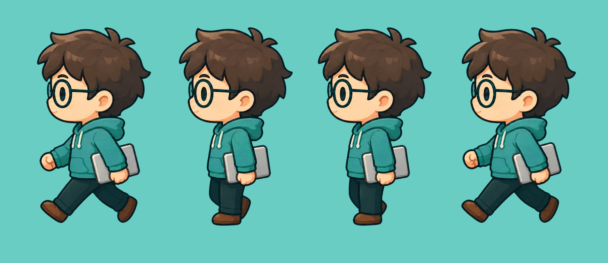
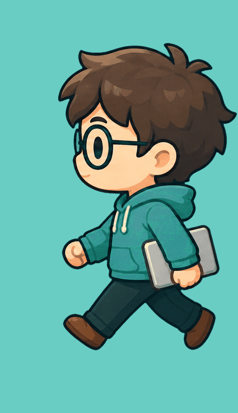

🚶 Wayfarer Engineer — Walk Cycle Test
gpt-image-2 · 4프레임 시트 · 크로마키 제거 · 125ms/frame (8fps)
🎞️ 프레임 시트 (4 frames)

Contact → Down → Passing → Up · 좌측 향하기
▶️ GIF 미리보기 (8fps)

125ms / frame
모델 gpt-image-2
프레임 4 (contact/down/passing/up)
타이밍 125ms = 8fps
배경 제거 remove_chroma_key.py --soft-matte --despill
부분투명 5% (프린지 0)
방향 전환 scaleX(-1)
팔레트 엔진 hex 락 (#3A9490 후디, #17343A 아웃라인)